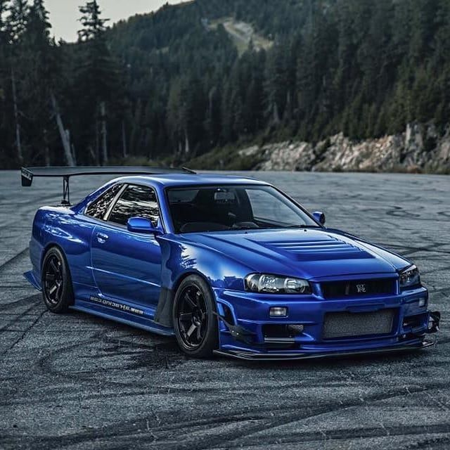
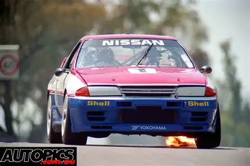
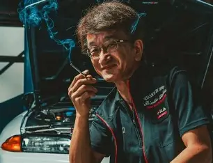
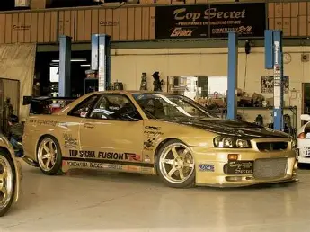
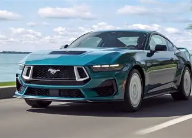

Godzilla

GT-R
The first Nissan GT-R debuted in February 1969 as the Nissan Skyline 2000GT-R, also known as the Hakosuka. Origins and Background The first GT-R traces its roots to the Prince Motor Company, which produced the Skyline series and competed in Japanese motorsports during the 1960s. Prince’s R380 race car impressed Nissan, leading to the acquisition of Prince in 1966. Building on this racing heritage, Nissan introduced the Skyline 2000GT-R sedan in 1969, marking the birth of the GT-R lineage

The Nissan Godzilla, aka the GT-R, is a motorsport legend. Nicknamed in the late 1980s by Australian media for its monstrous performance, the R32 GT-R dominated touring cars with its RB26DETT twin-turbo engine and ATTESA E-TS all-wheel drive, outpacing rivals like the BMW M3 and Ford Sierra. Its Group A variants crushed races, including a perfect 1990 Australian Touring Car season, while later R33 and R34 models excelled in endurance events like Suzuka 1000 km. Racing innovations like Super-HICAS four-wheel steering and tunable turbo power made the GT-R a “race car for the street.” Beyond its wins, Godzilla became a global icon of Japanese engineering, influencing modern GT-Rs and inspiring enthusiasts worldwide. This is the car that turned racetracks into its playground.
Smokey Nagata

There are tuners, and then there’s Smokey Nagata. A man who doesn’t treat speed as a hobby, but as a challenge to reality itself. Founder of Top Secret, he built his reputation in the grey area between engineering brilliance and absolute madness—high-speed runs on public roads, world-record attempts that sound more like rumours than fact, and a mindset that always asks, “what if we pushed it further?” Smokey isn’t just part of tuning culture—he is the part that refuses to behave.
Top secret Nissan GT-R R34
On paper, it already sounds like chaos. Take Nissan’s legendary R34 GT-R, remove its heart, and replace it with Toyota’s 2JZ. But in Smokey Nagata’s world, that’s not disrespect—it’s experimentation. The result is a machine that blends two of Japan’s most iconic engineering philosophies into one brutally fast creation. It keeps the GT-R’s aggressive AWD presence but gains the 2JZ’s reputation for handling insane boost levels. It’s not about purity anymore—it’s about power, balance, and proving that rules are optional.

Top secret Supra MK4
This is where things stop making sense completely. A Toyota Supra—already a legend in its own right—reborn with a V12 engine. Not just swapped, but transformed into something almost unrecognisable. The sound alone is enough to reset expectations: no longer the familiar inline-six growl, but a deep, exotic roar that feels like it belongs in a hypercar. It’s excessive, unnecessary, and absolutely brilliant. A Supra taken beyond its identity, rebuilt as a statement that engineering limits are only suggestions.
5.0L Ground Shaker

You don’t ease into a 5.0 Mustang—you wake it up. That Coyote V8 fires with a deep, confident rumble that instantly tells you this isn’t about subtlety. Naturally aspirated, high-revving for a V8, and packed with character, it pulls hard through the rev range without feeling forced. Every press of the throttle feels immediate, like the car is always ready for a bit of trouble. And then… you find a corner. Or an empty stretch. Or literally any excuse. Rear-wheel drive, plenty of power, and a chassis that’s more than happy to let the rear step out—it’s a drift machine if you know how to talk to it. You roll into the throttle, the back end loosens, and suddenly it’s not just driving anymore—it’s control, balance, and a bit of controlled chaos. Hold it right, and it feels effortless. Get it wrong, and it reminds you who’s in charge. That’s the magic of the 5.0. It’s not just fast—it’s fun. Loud, slightly wild, and always ready to turn a normal drive into something you’ll remember.